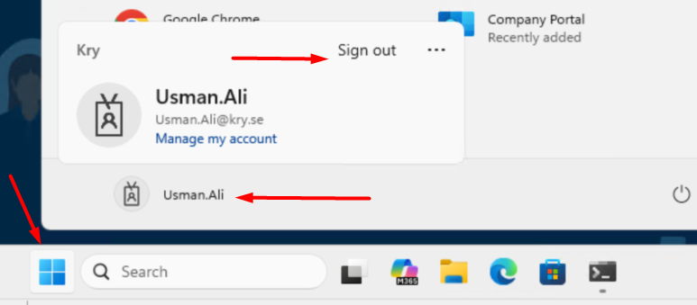
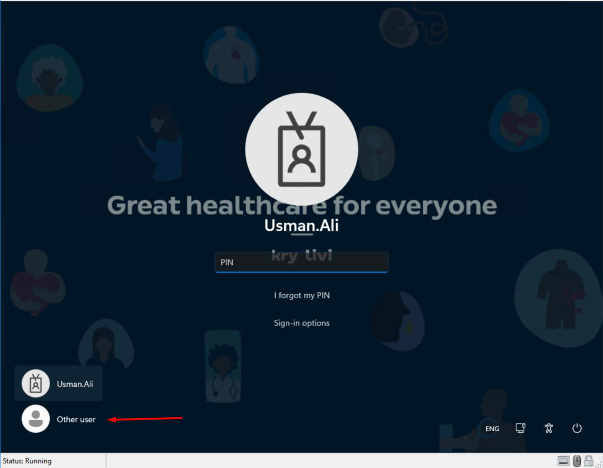
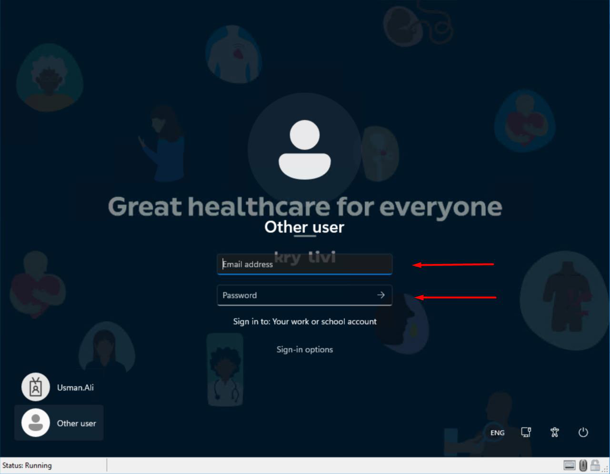

Vid din första inloggning efter att ditt användarnamn har ändrats måste du använda "Annan användare" på Windows-inloggningsskärmen — inte din befintliga profil. Den här guiden visar dig hur med skärmbilder.
Lösenordet förblir detsamma.
Tryck inte på din befintliga profil. Om du gör det misslyckas inloggningen. Använd alltid "Annan användare" längst ner till vänster på inloggningsskärmen vid din första inloggning.
Hoppa över det här steget om din dator redan är på Windows-inloggningsskärmen. Gå direkt till Steg 3.

firstname.lastname@kry.se
Efter att du klickat på "Annan användare" visas denna skärm. Ange ditt nya användarnamn och ditt befintliga lösenord.

firstname.lastname@kry.se + ditt befintliga lösenord